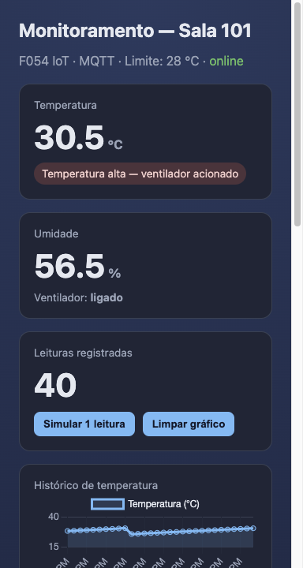
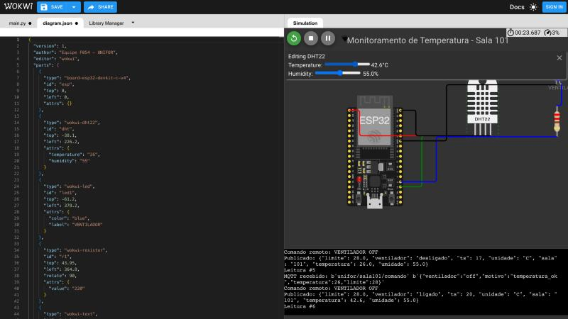
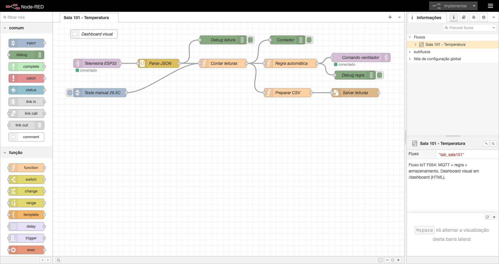

UNIVERSIDADE DE FORTALEZA
Centro de Ciências Tecnológicas
Educação a Distância
Atividade Parcial
Monitoramento de temperatura em sala de aula
com ESP32, MQTT e Node-RED
Integrantes
1. Nome completo — Matrícula
2. Nome completo — Matrícula
Fortaleza — 2026.2
Prazo de entrega: 27/11/2026
Em salas de aula, a temperatura tende a se elevar ao longo do dia por ocupação, insolação e ventilação insuficiente. Sem monitoramento contínuo, a percepção do desconforto ocorre tardiamente, prejudicando concentração e bem-estar dos estudantes.
Público beneficiado: alunos e equipe de manutenção/coordenação do campus.
Solução proposta: protótipo IoT simulado que coleta temperatura e umidade com sensor DHT22 acoplado a um ESP32 (Wokwi), transmite os dados via protocolo MQTT em formato JSON, processa/armazena as leituras no Node-RED, apresenta as informações em um dashboard web (indicador + gráfico) e executa uma ação automatizada: acionamento de um ventilador simulado (LED) quando a temperatura ultrapassa 28 °C.
Sensor DHT22 → ESP32 → Broker MQTT (HiveMQ) → Node-RED (Dashboard)
↓ ↓
LED / Ventilador ←———— comando MQTT ————┘
↑
Usuário (monitoramento)
| Camada | Componente | Função |
|---|---|---|
| Sensor | DHT22 | Coleta temperatura e umidade |
| Controlador | ESP32 (Wokwi) | Leitura, regra local e publicação MQTT |
| Comunicação | MQTT | Transporte das mensagens |
| Serviço | Node-RED | Recepção MQTT, regra e armazenamento CSV |
| Visualização | Dashboard web | Indicador, gráfico e alerta de automação |
| Atuador | LED | Representa ventilador |
| Usuário | Dashboard web | Acompanhamento em tempo quase real |
Segurança e privacidade: o protótipo utiliza broker público sem TLS, adequado apenas para fins acadêmicos. Em produção, seriam necessários autenticação, criptografia, rede restrita e governança dos dados. Não há coleta de dados pessoais.
Broker: broker.hivemq.com:1883. Mensagens em JSON nos tópicos:
unifor/sala101/temperatura — telemetria do ESP32unifor/sala101/comando — comando do ventilador (Node-RED → ESP32)unifor/sala101/status — status online do dispositivo{
"sala": "101",
"temperatura": 29.5,
"umidade": 58.0,
"limite": 28.0,
"ventilador": "ligado",
"unidade": "C",
"ts": 1731440000
}
O firmware (MicroPython) lê o DHT22 a cada 3 segundos, publica a telemetria e aplica a regra local se temperatura > 28 °C → liga ventilador. O Node-RED consome as mensagens, registra as leituras em CSV e reforça a automação publicando no tópico de comando. O dashboard web exibe indicador, gráfico histórico e o estado da automação.
Dashboard com temperatura 30,5 °C, ventilador ligado e dezenas de leituras:

Circuito no Wokwi (ESP32 + DHT22 + LED) e Serial Monitor — com o DHT22 em 42,6 °C a leitura é publicada com "ventilador": "ligado":

Fluxo Node-RED (editor):

Inserir também trecho do arquivo leituras_sala101.csv (≥ 20 linhas).
Foram registradas pelo menos 20 leituras para demonstrar armazenamento e acompanhamento
dos dados (arquivo leituras_sala101.csv).
Resultados: protótipo funcional com coleta, transmissão MQTT, visualização (indicador e gráfico), registro de leituras e ação automatizada sobre o atuador.
Dificuldades: sincronização entre simulador e broker público; instalação do dashboard do Node-RED; ajuste do limiar de temperatura para demonstração clara da regra.
Benefícios para a comunidade: apoio à decisão de ventilação/climatização, melhoria do conforto térmico em salas e possibilidade de expansão para outros ambientes do campus.
http://127.0.0.1:1880/uiDocumento gerado como base obrigatória da entrega. Substituir placeholders, inserir capturas e dados da equipe antes do envio no AVA.